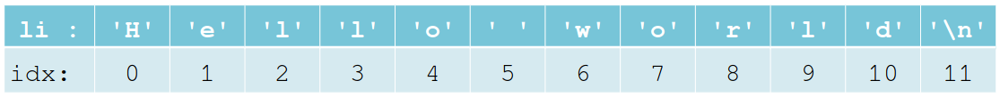

x = 3
# Same variable but different data type
print("x as int= ", int(x))
print("x as float= ", float(x))
print("x as string= ", str(x)) # Looks like int but is type str!x as int= 3
x as float= 3.0
x as string= 3An interpreter translates code and sends it to the CPU. The code is sent to the interpreter line by line. The interpreter provides a console for ad-hoc commands. It’s usually slower than a compiler and not good for optimization.
A compiler processes source code and returns an executable file. Compiler languages are usually fast and made for optimization (speed, storage use). Executable code is almost impossible to reverse-engineer.
Typically, an IDE provides additional tools to make programming more convenient. IDEs provide tools such as:
Note: Python is a text-only language that can be written in a simple text editor.
The Python console is a direct interface to the interpreter. Every instruction is sent sequentially to the interpreter. Commands sent in the console are sent directly to the interpreter.
A Python script is a collection of commands. Executing a Python script means sending all the commands it contains consecutively to the interpreter.
To avoid dependency issues of packages and keep the development environment clean, developers programme applications in virtual environments.
Python3 -m venv .venv # Standard nameNote: It is best practice to name the virtual environment .venv to hide it in the file system.
You need to activate the virtual environment.
. .venv/bin/activate # For LinuxYou can install packages into the venv with python3-pip.
A variable is a name that refers to a particular or undefined value. In programming languages, we use them as a reference to a particular storage location. A variable always consists of a name, a data type, a storage location and a value. Python does not require any type for variable definitions. It assumes the type from the value.
Note: Variable names are usually written in lowercase.
Basic data types:
Depending on the context, two particular mathematical operators can have different meanings. The sum operator (\(+\)), except for numerical values, means appending one element to another. This usually requires two elements of the same data type. The multiplication operation (\(*\)) always has to be applied with an integer.
Note: Sum and multiplication can be used with strings.
Two Boolean values can be combined in different ways using the keywords and, or and xor. Any Boolean operation can be inverted using the keyword not.
In Python, sequential data types can comprise mixed data types and can have multiple dimensions.
Depending on the operation, the same data may have to appear in different types. Data of a particular type can be transformed into a different data type.
Interaction with an application requires input and output. Use the input() function to print the passed string to the standard output (i.e., terminal). The input is read from the terminal and converted to a string.
A boolean expression can be of two states only (True or False).
Note: Python treats all that is NOT ‘empty’, ‘0’, ‘False’ or ‘None’ as ‘True’
Priority-List:
Bitwise operations in Python are used to manipulate individual bits of integer values.
x | y bitwise or of x and yx ^ y bitwise exclusive or of x and yx & y bitwise and of x and yx << n x shifted left by n bitsx >> n x shifted right by n bits~x the bits of x inverted< strictly less than<= less than or equal> strictly greater than>= greater than or equal== equal!= not equalis object identityis not negated object identityNote: Comparisons can be chained arbitrarily.
Block operations start with a colon (:) and are defined by indentations. Indentations can have an arbitrary number of spaces but must be constant for all instructions within the same block.
instruction
instruction
block header:
••••block instruction
••••block instruction
••••block instruction
instruction
instructioninstruction
instruction
block 1 header:
••••block 1 instruction
••••block 2 header:
••••••••block 2 instruction
••••••••block 2 instruction
••••block 1 instruction
••••block 1 instruction
instructionThe if-else statement is a control structure for checking a condition, allowing you to execute different code blocks depending on whether the condition is met.
x has the value 10elif allows for concatenating multiple conditions.
Shorthand if statements allow for less code and better readability.
Instead of using multiple combined conditions with elif statements, an expression can be directly checked against multiple specific cases.
The class range() allows creating sequence objects with constant step sizes. Ranges implement all of the common sequence operations except concatenation and repetition.
Notes: The stop element is not included.
len()len() returns the number of elements in a sequence. Returns positive integer: 0 indicates an empty sequence.
Extracting sub-sequences of larger data containers is an important and often used operation. Slicing options are:
my_list = list(range(1, 11, 1))
print(f"My list: {my_list}")
# Extract only even numbers
even_numbers = my_list[1:11:2] # Start = Index 1 (second entry), Steps = 2
print(f"All even numbers in my list: {even_numbers}")
# Extract only odd numbers
odd_numbers = my_list[0:11:2] # Start = Index 0 (first entry), Steps = 2
print(f"All odd numbers in my list: {odd_numbers}")My list: [1, 2, 3, 4, 5, 6, 7, 8, 9, 10]
All even numbers in my list: [2, 4, 6, 8, 10]
All odd numbers in my list: [1, 3, 5, 7, 9]Note: Same as
slice()
for-loopLoops are used to iterate over sequence objects by providing each element one after the other through a loop variable. Assign each element of the sequence one after another to the loop variable.
# Single loop
my_list = list(range(1, 11, 1))
print(f"My list: {my_list}")
for element in my_list:
print(f"Element is {element}")
else:
print("No more elements in my list")My list: [1, 2, 3, 4, 5, 6, 7, 8, 9, 10]
Element is 1
Element is 2
Element is 3
Element is 4
Element is 5
Element is 6
Element is 7
Element is 8
Element is 9
Element is 10
No more elements in my listNote: The loop variable is often called
i:for i in my_list:.
while-loopA while loop executes the loop body as long as the condition equals True. The while loop checks the condition each time before re-executing the loop body and terminates as soon as the condition is False.
aim = 5
counter = 0
while counter != aim: # != means not equal
print(f"Counter at value {counter}")
counter += 1 # Add 1 to the counter
else:
print("Aim reached")Counter at value 0
Counter at value 1
Counter at value 2
Counter at value 3
Counter at value 4
Aim reachedNote: Check whether the condition can be reached! Otherwise, you will end up in an infinite loop.
break, continue and passPython has three keywords to control the loop (and function) process flow:
breakImmediately break the current loop.
continueIgnoring the rest of the loop body and jumping back to the header.
passNo operation. Regular iteration with no execution.
The enumerate returns an iterator that returns a tuple with an incrementing number for each element of the sequence.
Modern data analysis methods (e.g. deep learning, optimisation) require large computational resources such as memory or gpu. Remote resources can be provided by individual institutions like HSLU, or rent from web service providers like Amazone Web Services (AWS) or Google Cloud Platform (GCP). Data scientists use two popular Python development environments for data analysis and reporting: Desktop IDE (PyCharm) and Notebooks (Jupyter).
A Jupyter Notebook is a web-based, open-source tool that combines live code (like Python), equations, output, and narrative text (Markdown) into a single, interactive document. It is organized into cells and is a cornerstone of data science for combining execution and documentation, making analysis transparent and reproducible.
Breakpoints define code locations where the execution shall stop. The execution is stopped before the selected line of code.
A debugger is a tool that allows developers to meticulously examine and control the execution of their code. It enables the setting of breakpoints, allowing the developer to inspect the current state of variables, the call stack (the sequence of function calls that led to the current point), and memory. This step-by-step execution, often called stepping (e.g., step over, step into, step out), is fundamental for isolating and understanding the root cause of bugs or unexpected behavior.
An Enum is a set of symbolic names bound to unique values. Enumeration requires the package Enum.
Enum allows handle a set of values:
Functions allow to combine multiple instruction into a function block that can be executed multiple times. Main advantages of functions are modularity (mitigates code duplication) and readability. Functions tackle only one particular issue at once. Ideally operate on its input only and produce some output.
Note: Functions are named by convention in snake case (i.e. lower case separated with ’_’):
my_function().
The function header is made up of the function name and any optional parameters.
Note: Functions in Python are defined by the term
def.
The body of a function contains a sequence of operations and should always have an output value. The number of operations within a function is unlimited, and they can call other functions.
def my_function(parameter1):
print(parameter1) # Call the print function
return True
my_function("Test run") # Call my_functionTest runTrueAll functions (including purely functional) have one return value; at least None. Return value is a pointer to a storage location.
Python offers a centralized documentation with docstrings; a built-in attribute assigned to each function named __doc__. If the __doc__ attribute is set with a documentation string, it is callable by means of the help() function. You can place a string block (triple-quotes “””doc text”””) immediately next to the function definition to define the docstring.
Python treats a string as a sequence (list) of characters (single letters, symbols or escape characters). Strings can be sliced, concatenated, allows index based access and formatting based on character position.

Formatting strings means defining the representation and treatment of particular sequences.
An f-string can be used to add variables to a string. Rather than writing the string again every time the variable changes, we can use the f-string to add multiple variables to the string.
Files enable storing data outside of the application and hence to keep the information for next execution or share data between different application. Python accesses files through a file object.
The buffer results in unfinished writing process as long as the file stream (file_object) is not flushed by ‘file_object.flush() or file_object.close()’.
Namespace is the definition of the visibility of a unique name for every single object (variables or methods). Object names must only be unique within a given namespace. Hence, the global namespace can have multiple local namespaces having objects with the same naming. The scope of an object refers to the code section from which an object is accessible.
Python allows creating variables without any restricted visibility. This variables in the global scope are accessible in the whole script and are called global variables. Local variables being restricted to a specific function block.
global_var = 123 # Free/Global variable
def my_function():
local_var = "Hello" # Local variable
print(local_var, global_var)
# The function can use both variables
my_function()
# This is not possible!
# print(local_var)Hello 123globalIn some problem solutions it is meaningful to have a global variable which gets updated from within a local scope of a function.
counter = 10
print(counter)
def reset():
global counter
counter = 0
print(f"Counter reseted: {counter}")
reset()10
Counter reseted: 0Note: It’s best practice to avoid global variables.
nonelocalThe Python keywords global and nonlocal target different scope levels when modifying a variable from within a function.
def outer():
enclosing_var = 20
def inner():
nonlocal enclosing_var
enclosing_var = 200
global global_var
global_var = 100
print(f"Inner: global_var={global_var}, enclosing_var={enclosing_var}")
inner()
print(f"Outer: global_var={global_var}, enclosing_var={enclosing_var}")
print(f"Start Global: {global_var}")
outer()
print(f"End Global: {global_var}")Start Global: 123
Inner: global_var=100, enclosing_var=200
Outer: global_var=100, enclosing_var=200
End Global: 100Parameters are always refernces to arguments. An argument can be of a mutable (like lists) or immutable data type. The content of mutable data types can be “globally altered in functions.
Python assigns one object to the first and the last variable and packs all the remaining objects into a tuple that is assigned to the variable with the packing operator
var1 = 1
var2 = ["hello", "-", "world"]
var3 = 22
print(var1, var2, var3)
# Using the packing operator
var1, *var2, var3 = 1, "hello", "-", "world", 22
print(var1, var2, var3)1 ['hello', '-', 'world'] 22
1 ['hello', '-', 'world'] 22*args: packing operator (*) packs all non-keyword arguments into a tuple.**kwargs: double packing operator(**) packs all keyword arguments into a dictionary('hello', 'world')
{'arg1': 33, 'arg2': 55}In contrast, lists and tuples can be unpacked using the packing operator (*) and (**) for dictionaries, respectively.
A recursive function is simply a function that calls itself during its execution. It is especially useful to loop through a data set with undefined dimension and undefined iteration count. Despite increased complexity and risks, recursion allows to solve complex problems in a short way.
Object-Oriented Programming (OOP) is a programming paradigm that structures code around objects rather than functions and logic. It’s a powerful way to model real-world entities and relationships in your code, leading to more modular, reusable, and scalable applications.
Assembly instructions for box construction are represented by the class. The produced boxes, all with the same set of tools but different property values, are called objects. In Python everything is an object and variables hold references to these objects. This means, when you assign an object to a variable, you actually create a reference to that object in memory.
A class in python consist of several elements: - header with class name indicates the beginning of a class description. - init() method: The constructor constructs a new object of the class. - variables: class: Variables belonging to the class description. Object: variables belonging to a particular object. - methods (functions): Class: methods provided by the class description. Object: methods provided by the object. - self attribute: Reference to the object: required to access object attributes.
Note: For class names, we use CamelCase instead of underscores, as in function names.
__init__Generating a new object, requires calling the class name and defining the specific properties by attributes passed to the constructor. Each time when generating a new object, python calls the constructor and passes the “properties” (attributes) to the init() method.
The class definition fully describes the class (i.e. the object). It comprises a mix of all variables and methods provided for the whole class and particular objects. Methods and variables are called with the object or by reference (self-keyword), respectively. Similarly to variables, methods can belong to an object or a class itself. The declaration and call is the same as for regular functions, yet always requires a reference
Note: The keyword
clsis a convention but not necessary.
selfThe self keyword points to the object it belongs to (namely itself). It allows to call or apply a variable and method, respectively, of (on) a particular object.
Belong to a particular object. Modifying object’s state.
Belong to a particular class. Modifying class’ state.
Don’t belong to object nor class. Provide operations independent of any object or class state.
Dunder Methods (or Magic methods), are special methods in Python classes marked by double leading and trailing underscores (e.g., __init__, __str__).
__str__()By implementing a str() method, the programmer can define what is printed when an object of an own class is passed to the print function.
Inheritance creates a hierarchy of classes. This avoids code redundance and increase maintainability. Use the function sinstance(object, classinfo) or issubclass(class, classinfo) to check if an instance is a subclass of a other class. Child classes get all properties (attributes) from parent class. This means, class or object variables or methods defined in the parent class also hold in the child classes. Typically, child classes extend parent classes. In some cases, a child class can override variables or methods from parent class.
class Animal:
def __init__(self, weight):
self.weight = weight
class Bird(Animal):
def __init__(self, weight):
super().__init__(weight) # Inheritance from the parent classWhen extending functionality of parent class by overriding a method (or in general to use parent’s methods), they can be referred to using super() or parent’s class name.
class Animal:
def __init__(self, weight):
self.weight = weight
def get_weight(self):
return self.weight
class Bird(Animal):
def __init__(self, weight):
super().__init__(weight)
def get_weight(self):
return super().get_weight()/10This is the ultimate base class of all other classes. It has methods that are common to all instances of Python classes. When the constructor is called, it returns a new featureless object. The constructor does not accept any arguments.
The Method Resolution Order (MRO) is the order in which Python searches for methods and attributes in a class hierarchy. It dictates the sequence of base classes that are checked when a method is called on an object of a derived class, especially in cases of multiple inheritance (where a class inherits from more than one parent). The MRO is essential for making multiple inheritance reliable and predictable.
The super() function relies entirely on the MRO. When you call super().method(), Python uses the MRO list to find the next class in the hierarchy after the current class that implements method(), ensuring that base class methods are called in the correct, standardized order.
Since Python is a script language and does not compile code in advance to execution, it lacks of keywords defining attribute’s accessibility. Yet, there is a convention in the naming of attributes using _ for protected and for __ private attributes for treating access restrictions.
Note: This is only a convention. Python has no hard restrictions and allows to access all attributes on object level.
A module is a file containing Python definitions and statements. We can use modules for better structuring the source code of the whole application.
In order to access content of other modules, they can be imported to a module as whole or parts of it.
import numpy # Declares reference to module
import numpy as np # Renames reference to
from numpy import array # Declares reference to specific attribute
from numpy import * # Declares references to “all” attributesWhen imported, attributes of external modules are accessed differently, depending on the import.
Referring to external modules and files require either absolute or relative references. By default, root is set to the main executed script. The main executed script only allows absolute path. By default, imported modules are searched relative to the script path. For this case, the module sys allows to extend the search space for imported modules.
If __name__ == “__main__”:The If __name__ == “__main__”: block determines how a Python file is being executed.
__name__ is set to "__main__", and the code inside the block runs. This is where you put your application’s main execution logic (e.g., calling your primary function).__name__ is set to the module’s name, and the code inside the block is skipped. This allows the file to be used as a reusable library without triggering unwanted side effects.This structure allows a single Python file to be both runnable and importable.
Python enables to structure project resources using packages. a folder becomes a package as soon as it comprises a script named __init__.py
Note: Since Python 3.3, there has been no need to declare an
__init__.pyfile for packages, but it is still good practice.
__init__.py ScriptObjects defined in the init.py are bound to names in the package’s namespace.
The Python Software Foundation hosts an own repository for official Python packages called PyPI. pip is a command-line interface (CLI) tool for installing Python packages.
NumPy is the fundamental package for scientific computing in Python. It is a Python library that provides a multidimensional array object, various derived objects, and an assortment of routines for fast operations on arrays.
Multidimensional array object (ndarray) are sequences, matrices or multidimensional matrices of numerical values. Important differences between NumPy arrays and the standard Python sequences are:
ndarray creates new array.Pandas is a fast, powerful, flexible and easy to use open source data analysis and manipulation tool, built on top of the Python programming language.
Data frames are tabular data structure commonly used in data analysis and statistical computing.
A series is a one dimensional data (index and one column of a data frame).
Matplotlib is a low-level library that provides a lot of flexibility and control over the creation of plots. Matplotlib has three fundamental components used for creating and managing plots:
Built on top of Matplotlib, Seaborn is a high-level library specifically designed for statistical data visualization. Since seaborn builds on top of matplotlib, it is mandatory to import pyplot from matplotlib in order to add titles or show the plot directly.
Jupyter Notebook is an open-source web application that allows you to create and share documents that contain code, equations, visualizations, and narrative text. It is widely used for data analysis, scientific research, machine learning, and educational purposes.
Python only has objects and references to them. So, variables are always references to objects stored in the memory in one or more storage cells. Consequently, when copying a variable, we copy the reference to a particular object – not the object itself.
# Define a var
x = 123
y = x # Copy x to y
# Both vars have the same memory location
print(id(x))
print(id(y))11764584
11764584To create a copy of a sequence object with a new reference (ie. id), sequence objects implement the copy() method.
Note: The method
copy()is only available for mutable objects.
Copying a sequence returns a shallow copy of the object only. References to sub-sequences still remain the same and are affected by the same side-effect as when duplicating the reference by reassignment.
When associating a function to a variable, this can be done directly without function declaration first. Associated to a variable, they can be called as regular functions by the variable as reference instead of the function name. are typically used for expressions in combination with filter functions such as for the map() or sort() functions.
map()-FunctionApplies a function to every single item of an iterable.
sort()-FunctionSorts an iterable based on a given comparator.
Instead iterating a list with a for loop for applying a single expression on each element, a single expression can be applied in a simpler way on one line using a list comprehension.
my_list = [1, 2, 3]
new_list = []
# Iterate over a list
for value in my_list:
new_list.append(value * 2)
print(f"Original list: {my_list}")
print(f"New list with loop: {new_list}")
### IS THE SAME AS ###
my_list = [value * 2 for value in my_list]
print(f"New list with comprehension {my_list}")Original list: [1, 2, 3]
New list with loop: [2, 4, 6]
New list with comprehension [2, 4, 6]Comprehensions can be applied in-place
Comprehensions only apply a single expression on each list element. However, it provides the option defining conditions for the elements on that it should be applied.
my_list = [1, 2, 3, 4]
# Only double even values from the list
my_list = [value * 2 if value % 2 == 0 else value for value in my_list]
print(my_list)[1, 4, 3, 8]Note: The single expression can also be a regular function
comprehension allow to apply expressions to multi-dimensional lists – nested list comprehension.
my_list = [[1, 1], [2, 2], [3, 3]]
new_list = []
# Iterate over both lists
for coordinate in my_list:
new_coordinate = []
for entry in coordinate:
new_coordinate.append(entry * 2)
new_list.append(new_coordinate)
print(f"Original list: {my_list}")
print(f"New list with loop: {new_list}")
### IS THE SAME AS ###
my_list = [[entry * 2 for entry in coordinate] for coordinate in my_list]
print(f"New list with comprehension {my_list}")Original list: [[1, 1], [2, 2], [3, 3]]
New list with loop: [[2, 2], [4, 4], [6, 6]]
New list with comprehension [[2, 2], [4, 4], [6, 6]]Despite the similarity between tuple and list in Python, there exist no tuple comprehension.Generating a tuple with a comprehension requires an explicit typecast tuple() or a tweak using unpacking operator for variable assignment.
Dictionary comprehension requires the format of dictionary elements as expression results.
The Python runtime does not enforce function and variable type annotations. They can be used by third party tools such as type checkers, IDEs, linters, etc. In particular, we only define the type (any Python class) of references separated by colon (:) and arrows (->).
Python’s assert statement allows you to write sanity checks in your code. These checks are known as assertions, and you can use them to test if certain assumptions remain true while you’re developing your code. If any of your assertions turn false, it indicates a bug by raising an AssertionError.